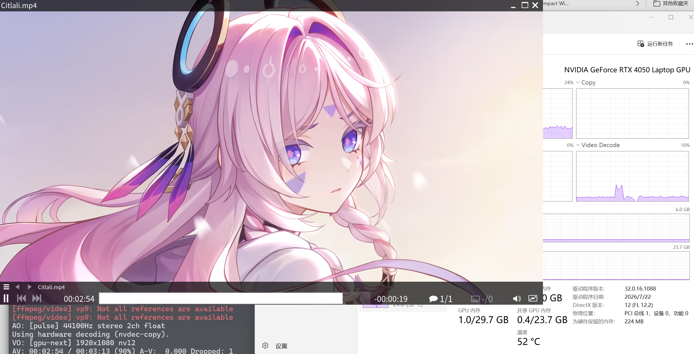
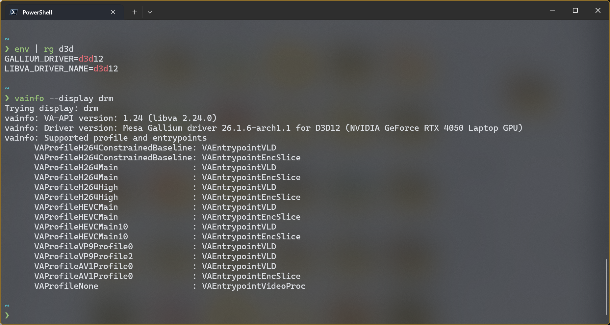

WSL2 通过 WDDM GPU 半虚拟化（GPU-PV）共享由 Windows 管理的物理 GPU。Linux 程序从 /dev/dxg 进入这条链路，OpenGL、Vulkan 和 VA-API 再由 Mesa 翻译到 D3D12。
WSLg 把 Linux 窗口集成到 Windows 桌面。GPU-PV 提供 GPU 执行通路，WSLg 负责窗口显示，两条通路在应用运行时配合工作。
准备工作 #
先在 Windows 终端更新 WSL，并安装最新的显卡驱动：
wsl --update
wsl --shutdown
wsl --list --verbose
目标发行版应运行在 WSL2。重新进入 Arch 后，确认 WSL 已投影 GPU 设备和 D3D12 库：
ls -l /dev/dxg
ls -l /usr/lib/wsl/lib/libd3d12.so /usr/lib/wsl/lib/libdxcore.so
/dev/dxg 由 WSL 和 Windows 显卡驱动提供。缺少该设备时，应先更新 WSL 和支持 WSL 的 Windows 显卡驱动。
安装软件包 #
sudo pacman -Syu ffmpeg glmark2 libva-utils mesa mesa-utils mpv vulkan-dzn vulkan-tools
Arch 的 mesa 包含 D3D12 Gallium 与 VA-API 驱动，vulkan-dzn 则提供 Vulkan-on-D3D12 ICD。
配置 Mesa #
下面两个变量分别让 OpenGL 和 VA-API 使用 D3D12 后端：
printf '%s\n' \
'export GALLIUM_DRIVER=d3d12' \
'export LIBVA_DRIVER_NAME=d3d12' \
| sudo tee /etc/profile.d/wsl-gpu.sh
source /etc/profile.d/wsl-gpu.sh
多显卡机器可以指定适配器。这个值是显卡名称的子串，匹配时不区分大小写，应按本机情况修改：
echo 'export MESA_D3D12_DEFAULT_ADAPTER_NAME=NVIDIA' \
| sudo tee -a /etc/profile.d/wsl-gpu.sh
准备 DRM 设备节点 #
先检查设备节点：
ls -l /dev/dri
如果 /dev/dri/card0 或 /dev/dri/renderD128 不存在，可加载 WSL 内核提供的 vgem 模块；确认有效后再设置开机加载：
sudo modprobe vgem
echo vgem | sudo tee /etc/modules-load.d/vgem.conf
vgem 创建的 /dev/dri 节点为 Mesa、EGL 和 VA-API 提供兼容的 DRM 接口，GPU 命令仍通过 /dev/dxg 进入 GPU-PV。若当前用户没有设备访问权限，可将其加入 video、render 组，然后重新登录：
sudo usermod -aG video,render "$USER"
验证 #
eglinfo -B | grep -i renderer
vulkaninfo --summary
vainfo --display drm --device /dev/dri/renderD128
OpenGL 输出应包含 D3D12 和实际显卡名称，llvmpipe 表示仍在使用软件渲染。Vulkan 应列出 dzn 对应的 D3D12 设备。vainfo 显示当前显卡与 Windows 驱动支持的编解码 Profile，不同机器的结果可能不同。
接着测试渲染、播放与转码：
glmark2
vkcube
mpv --hwdec=vaapi-copy input.mp4
ffmpeg -vaapi_device /dev/dri/renderD128 \
-hwaccel vaapi -hwaccel_output_format vaapi \
-i input.mp4 -c:v h264_vaapi output.mp4
taskmgr.exe
运行测试时可在 Windows 任务管理器中观察相应的 GPU 引擎。FFmpeg 命令要求 vainfo 同时列出输入格式的解码能力与 H.264 编码入口；硬件不支持时需要更换编解码器或改用软件编码。


原理分析 #
GPU 执行：GPU-PV 与 D3D12 #
WSL2 的 GPU 支持建立在 WDDM GPU 半虚拟化（GPU-PV）之上。微软为 WSL2 内核实现了 dxgkrnl，并通过 /dev/dxg 暴露接近 WDDM D3DKMT 服务层的接口。Linux 侧的 dxgkrnl 经由 VM Bus 与 Windows 宿主的 dxgkrnl 通信，物理设备最终仍由 Windows 显卡驱动的内核模式驱动（KMD）控制。
微软还把与 Windows d3d12.dll 同源的 D3D12 用户态组件编译为 Linux 库，投影到 /usr/lib/wsl/lib；显卡厂商提供的 Linux 目标 D3D12 用户态驱动则位于 /usr/lib/wsl/drivers。对本文涉及的三类 API，调用链可以简化为：
OpenGL ─> Mesa Gallium d3d12 ─┐
Vulkan ─> Mesa dzn ───────────┼─> D3D12 用户态栈 ─> /dev/dxg
VA-API ─> Mesa D3D12 Video ───┘ │
└─> VM Bus ─> Windows dxgkrnl
─> GPU KMD ─> GPU
GALLIUM_DRIVER=d3d12选择 OpenGL 的 D3D12 Gallium 后端。vulkan-dzn把 Vulkan 调用翻译为 D3D12。LIBVA_DRIVER_NAME=d3d12让 VA-API 通过 D3D12 Video 使用显卡的解码、编码和视频处理单元。
WSL2 中的多种 GPU API 共用 WDDM GPU-PV 基础设施。Mesa 和 D3D12 承接 OpenGL、Vulkan 与 VA-API；CUDA 等计算栈则使用独立的用户态驱动连接 WDDM 抽象层。
窗口显示：WSLg 与 VAIL #
WSLg 运行在只读的 system distro 中；当前 system distro 基于 Azure Linux 3.0，与用户发行版共享 WSL 虚拟机和内核，但用户态相互隔离。WSLGd 启动并监控 Weston、XWayland 和 PulseAudio，还会在宿主机静默启动 mstsc.exe 建立 RDP 连接。
Linux GUI 应用
─> Wayland / X11（经 XWayland）
─> Weston + FreeRDP
─> VAIL 共享内存
─> Windows mstsc.exe
─> DWM / Windows 桌面
RAIL 按远程连接设计，在 RDP 传输中复制像素。WSLg 使用 VAIL，通过 virtio-fs 在宿主机与客户机之间共享内存，并按窗口传递画面。Windows 随后将这些窗口接入任务栏、Alt-Tab、剪贴板和多显示器体系。
GPU 执行路径生成画面，WSLg 显示路径将窗口呈现到 Windows 桌面。纯 CUDA 任务只使用 GPU 执行路径，可以在关闭 WSLg 后运行。
性能开销 #
这套图形栈的开销来自 API 与着色器翻译、跨虚拟机的命令提交和同步、显存与系统内存之间的数据移动，以及 Weston 和 Windows DWM 的两级合成。具体瓶颈取决于应用的 API、数据传输量和呈现频率。
检测结果中的 D3D12 表明应用已使用 GPU 加速。它与原生 Linux 的性能差异需要按具体负载测试。依赖 Linux 原生显卡驱动，或需要降低虚拟化开销的任务，更适合原生 Linux；硬件和平台允许时，也可以使用支持设备直通的独立虚拟机。